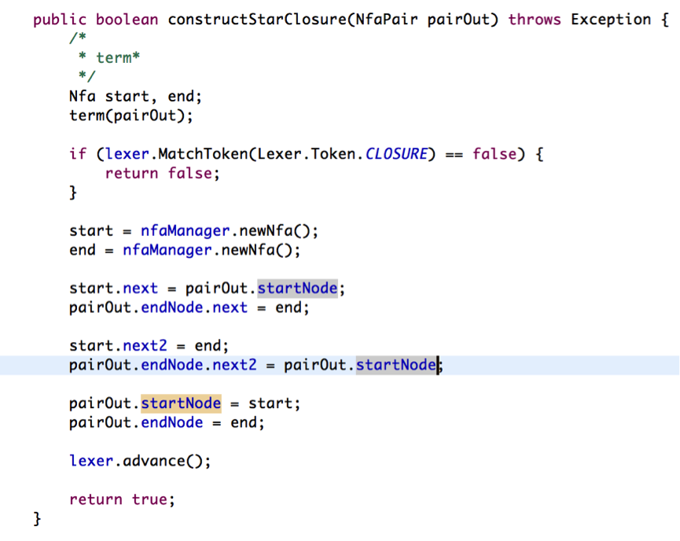

阅读博客的朋友可以到我的网易云课堂中，通过视频的方式查看代码的调试和执行过程：
http://study.163.com/course/courseMain.htm?courseId=1002830012
大家好，欢迎大家来到coding迪斯尼，在上一节，我们讨论了如何对简单的正则表达式构造其对于的NFA状态机，通过代码，我们理解了如何对形如[abcd], [a-z], . , a 等这几种形态最简单的正则表达式，构建他们对应的Nfa。这一节，我们看看，如何在这一步基础上，构造更复杂的Nfa状态机。
我们把上面四种形态的正则表达式统一用 term 来概括，因此有:
term -> […] | [.-.] | . | a | [^…]
其中[…]对应[abcd]这种类型的字符集类，[.-.]对应[a-z]这种类型的字符集类。
现在我们看看, 如何构建term闭包操作对应的Nfa, 也就是如何实现
term*, term+, term?
这几种类型的Nfa状态机.
让我们回想下，Thompson构造算法中，闭包操作是怎么构造的:
中间的虚线框所代表的，可以是我们通过term所构造的Nfa状态机。通过上图，我们可以总结出程序的实现流程：
1. 通过term构造nfa状态机。
2. 分配两个节点作为头结点和尾结点。
3. 将头结点的next指向term返回的状态机的头结点(startNode)，term返回的尾结点(endNode)的next2指向它本身的头结点， 将endNode的next指向分配的尾结点。
4. 将分配的头结点的next2指向尾结点（对应于图中的由头到尾那一条长长的ε边。
我们看看代码的实现：

大家可以看到，代码的实现步骤跟我在前面总结的是一一对应的。
我们再看看正闭包操作的实现：
根据上图，我们代码的实现流程如下：
1. 通过term构造nfa状态机(中间虚线框部分)
2. 分配两个节点做头节点和尾节点
3. 将头结点的next指向term返回的状态机的头节点，将term返回的状态机的尾节点的next2指向上面分配的尾节点，将term返回的状态机的尾结点的next 指针指向它自己的头结点(startNode)
我们看看代码的实现：
接下来，我们看看选择操作的nfa构建过程：
根据上图，我们总结出的构建流程如下：
1. 通过term 构造nfa状态机(中间虚线部分)
2. 分配两个节点作为头结点和尾节点
3. 将头结点的next指向term返回的状态机的头节点，将term返回的状态机的尾节点的next指向上面分配的尾节点
4. 将第二部分配的头结点的next2指向分配的尾节点。
我们看看代码的实现：

最后，我们把上面三个函数整合到一个函数factor中:
通过factor函数，可以总结出 以下语法规则:
factor -> term* | term+ | term?.
正则表达式 & 操作的nfa构建
正则表达式的 & 操作，其实就是多个正则表达式前后连接成一个新的表达式而已。例如 expr1 = [0-9]*, expr2 = [a-z] 那么expr1 & expr2 就是:
[0-9]*[a-z]
大家是否已经意识到，正则表达式的& 操作其实就是多个factor 前后连在一起。
(Thompson nfa状态机连接操作)
根据Thompson构造法，正则表达式 的nfa构建也简单,先通过factor构建多个nfa状态机，然后把上个factor返回的状态机所对应的尾节点的next指向下一个factor返回的状态机的头节点，流程总结如下：
1. 通过factor构建首个nfa状态机
2. 通过factor构建第二个nfa状态机
3. 将前两个状态机首尾连接成一个nfa状态机
4. 再看看能不能继续用factor构建出新的nfa状态机，如果可以的话，将第3步构建的状态机与当前构建的状态机首尾相连成一个nfa状态机
5. 重复 4， 直到不能继续用factor构造不出新的状态机为止。
代码实现如下：
while 循环实现的就是前面提到的2，3，4，5步骤。
first_in_cat 主要用来判断正则表达式的输入是否合法，如果表达式以 ], ) ,*, 等符号出现在开头，那么输入的表达式就是错误的，错误的表达式也就没有构建的必要, 如果表达式以EOS开始，也就是表达式解析结束了，这意味factor再也构建不了新的nfa状态机，那么连接操作就不需要再进行了：
讲解完代码和算法思路后，接下来，就是通过代码调试，跟大家展示代码的实现逻辑了。